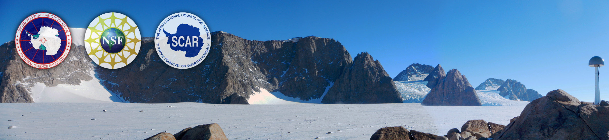
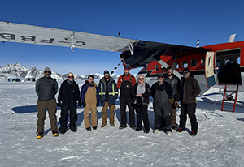
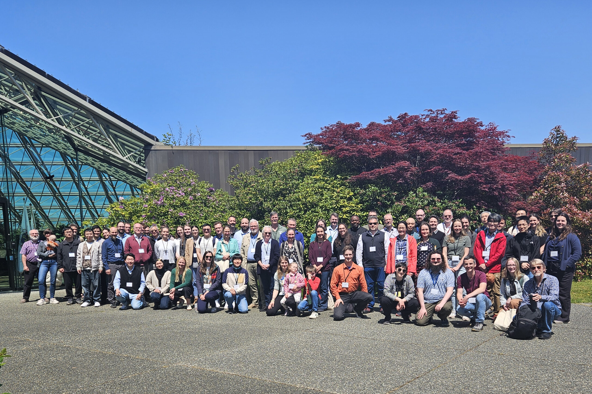

Investigating the polar regions from the inside out
Click below to follow along with the field team as they work out of Union Glacier Camp in the Ellsworth Mountains in West Antarctica.

The project focuses on collecting GNSS and seismic data from autonomous systems deployed at remote sites spanning much of the Antarctic ice sheets. GNSS and seismic measurements together provide a means to answer critical questions about ice sheet behavior in a warming world.

The 2025 Glacial Isostatic Adjustment (GIA) Workshop in Sidney, British Columbia, Canada from 2-6 June was a success! Researchers of all career stages discussed recent advances in the observations, analysis, and modelling of GIA. Click below to learn more about the workshop.Recent Updates
-
…
-
The 2024-2025 ANET-POLENET season is nearly here! Our field team of 6; including science team members, engineers and a mountaineer will deploy to ALE’s Union Glacier Camp for a mon…
-
From November 6th to the 8th, the 2024-2025 ANET field team met at the EarthScope GAGE facility in Boulder, CO for two and a half days of hands on training. The team practiced impo…
-
Ohio State ANET research associate David Saddler visited St. Brendan Elementary School in Hilliard, OH on November 8th. He spoke to 64 3rd grade students about identifying rocks an…